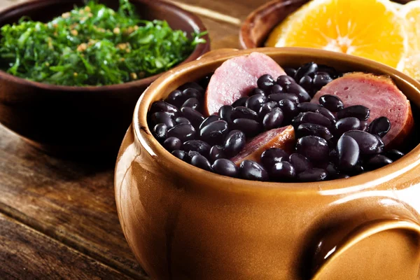

Feijoada

Description
This feijoada recipe is my version of a traditional Brazilian black bean stew that maintains the rich smoky, flavors famous in Brazil. Additional meats, including sausage, may be added if desired. This is excellent served over brown rice.
Ingredients
- 1 tablespoon olive oil
- 1 1/2 cups chopped onion
- ½ cup green onions, chopped
- 2 bay leaves, crushed
- ⅛ teaspoon ground coriander
How to Cook
- Heat oil in a large pot or Dutch oven. Add 3/4 cup chopped onion, green onions, and garlic; cook and stir until softened, about 4 minutes. Pour in soaked beans and fill with enough water to cover beans by 3 inches. Bring to a boil, then reduce heat to medium-low, and simmer uncovered for 2 hours, or until tender.
- While beans are cooking, place ham hocks in a smaller pot with 1/4 cup chopped onion. Cover with water and simmer until meat pulls off of the bone easily, about 1 hour. Drain and add to beans.
- Meanwhile, preheat the oven to 375 degrees F (190 degrees C).
- Place ham, bacon, and remaining onion in a baking dish. Bake until mixture is crispy, 15 minutes.